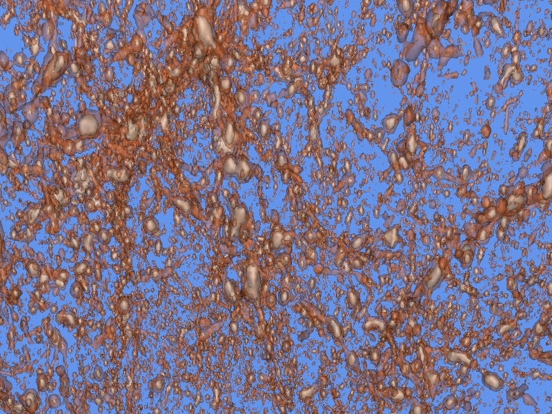

Based on a draft port of the VTK toolkit posted on ports@, I thought I would try out displaying various kinds of data from the CUBEnu simulations.
That turned out to be a bunch of work.
Note – this posting is of historical curiosity only, because it relies on integrating Python 3.7 with VTK8. This is not supported in OpenBSD 6.8, only OpenBSD 6.7 and some earlier releases.
The Visualization Toolkit (VTK) is a well-established multi-platform software package used in many HPC, medical, and engineering applications. See https://vtk.org for more info.
VTK is a library of data processing, rendering and display functions which are assembled in a C++ or Python program to generate images on a display.
I was porting vtk8 to a 6.7-current version (precursor to a 6.8 release of OpenBSD). In this case, I wanted to add
There were numerous issues getting a port to work. The result can be found at Re: [NEW] math/vtk8 at marc.info.
The key issue is probably that only Python 3.7 is supported, and this version of Python is removed from OpenBSD 6.8, so no additional libraries are available unless you build them yourself. For this work, only NumPy is needed and that easily downloads and builds using pip3.
VTK-9 exists and may be a better choice for OpenBSD 6.8 or later, but for this work I started on the vtk8 release.
My goal was display of the density field resulting from a CUBEnu simulation. As seen in earlier explorations Python3 Image Display the static images show considerable structure, but the third dimension is hard to visualize even in the walk-through movies.
Reading the VTK Textbook over the course of several weeks, I learned the distinctions and concepts the VTK authors had used and refined over 20 years of work. A pipeline of data transformation, geometry objectification, and rendering is developed for each use-case, with the VTK library as the central implementation tool.
Climbing this learning curve was necessary, but in the end turned out to best be understood when I discovered that I need write no software at all – an example program had everything needed and had already been written.
The VTK Cookbook, chapter 7, shows an example with RayCastIsoSurface program. This method uses two isosurfaces (defined by a constant density value in the simulation space), computes triangulated surfaces of each isosurface, colours them and displays them. The result is shown in this figure:

captured with the scrot utility.
The command is
./RayCastIsosurface ../Data/testzlog16.mhd 4800 7600
where the mhd file contains
ObjectType = Image
NDims = 3
BinaryData = True
BinaryDataByteOrderMSB = False
CompressedData = False
TransformMatrix = -1 0 0 0 1 0 0 0 -1
Offset = 0 0 0
CenterOfRotation = 0 0 0
AnatomicalOrientation = LAS
ElementSpacing = 0.9375 0.9375 1.5
ITK_InputFilterName = MetaImageIO
DimSize = 544 544 544
ElementType = MET_USHORT
ElementDataFile = testzlog16.bin
which is basically a file descriptor, and the bin file was generated from the 3D float file with Python like this:
import numpy as np
ng=544
fnz="path/to/image1/0.000_delta_c_1.bin"
z0=np.memmap(fnz,dtype='float32',mode='r',shape=(ng,ng,ng))
z0lin=np.log(z0-np.min(z0)+1.2)
z0linarr=(z0lin-np.min(z0lin))*16000/(np.max(z0lin)-np.min(z0lin))
z016=z0linarr.astype('uint16')
fnz16=open("Data/testzlog16.bin","wb")
fnz16.write(z016)
fnz16.close()
np.histogram(z016)
(array([143064759, 13616728, 2981478, 848847, 294857, 124833,
43353, 11891, 2243, 195]),
array([ 0. , 1599.9, 3199.8, 4799.7, 6399.6, 7999.5, 9599.4,
11199.3, 12799.2, 14399.1, 15999. ]))
From this histogram I chose the isosurface values 4800 and 7600.
While VTK is complicated and therefore many-featured, it is a steep learning curve to apply. There are other tools (Paraview, from the same source).
This display resulted in a number of questions for me:
October 2020
OpenBSD Numerics Experience - 1 - RNG
OpenBSD Numerics Experience - 2 - RNG floats
OpenBSD Numerics Experience - 3 - FFTW
OpenBSD Numerics Experience - 4 - CAF
OpenBSD Numerics Experience - 5 - MPI Networking
OpenBSD Numerics Experience - 6 - Memory Models
OpenBSD Numerics Experience - 7 - Python Image Display
OpenBSD Numerics Experience - 8 - RNGs, again
OpenBSD Numerics Experience - 9 - Nim
OpenBSD Numerics Experience - A - Graphical Display
OpenBSD Numerics Experience - B - ParaView
OpenBSD Numerics Experience - C - Numerical Debugging
OpenBSD Numerics